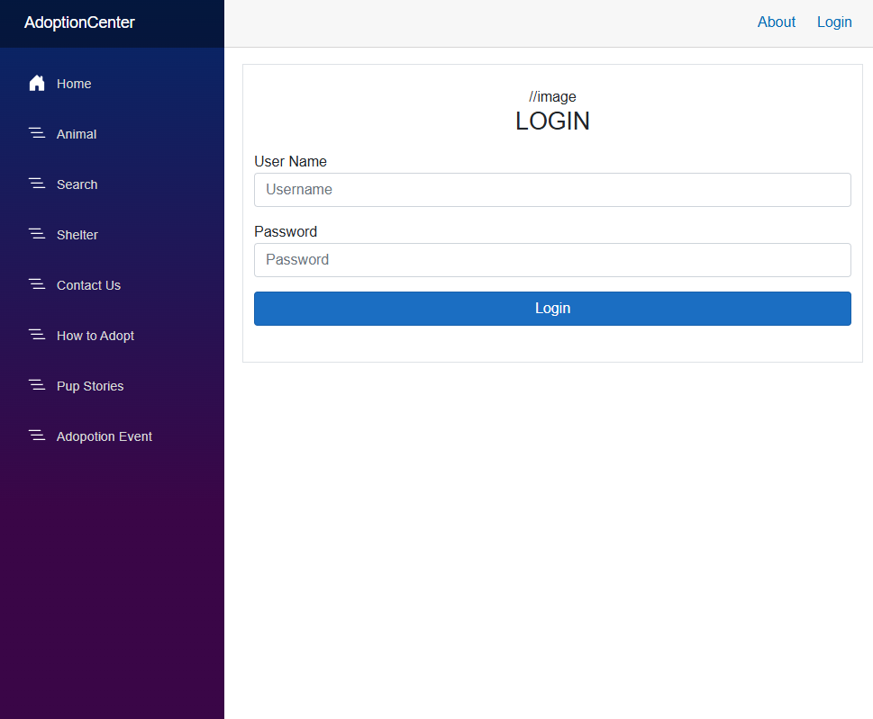
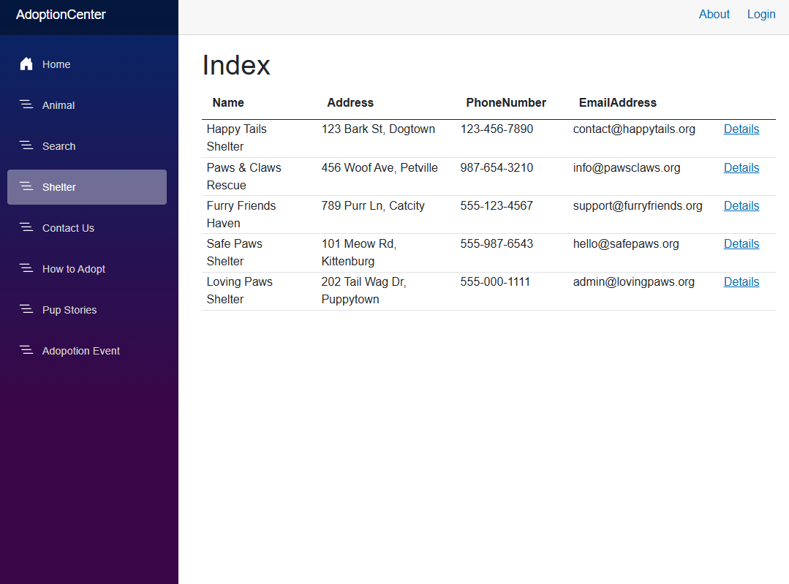

About This Project
For CSCI Modern Software Development, I worked with Gage Koskovich to build a full-featured adoption website for animal shelters. The site supports multiple user roles including admin, staff, and public users. Shelters can list animals for adoption, manage records, and interact with users securely.
I focused on implementing role-based authentication and creating a backend using Microsoft SQL Server. This project gave us hands-on experience integrating a Microsoft SQL database with a web application, while keeping it user-friendly and efficient.
 